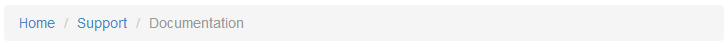

Bootstrap's Interface Components
In this section, we will give a summary on useful interface components provided by Twitter Bootstrap. We plan to use some of these components in our further examples, and this section should give an idea of how you can use these widgets in your own websites.
Navigation Bar
Navigation bar is usually positioned on top of your website and contains the links to main pages, like Home, Download, Support, About, etc. Twitter Bootstrap provides a nice visual style for the navbar (see figure C.7 for example):
 Figure C.7. Navbar
Figure C.7. Navbar
As you can see from the figure above, a navbar typically has the header (brand name of your site can be placed here) and the links to main pages. To put a navbar on your page, you use the following HTML code:
<nav class="navbar navbar-default" role="navigation">
<div class="navbar-header">
<a class="navbar-brand" href="#">Hello World</a>
</div>
<ul class="nav navbar-nav">
<li><a href="#">Home</a></li>
<li><a href="#">Download</a></li>
<li><a href="#">Support</a></li>
<li><a href="#">About</a></li>
</ul>
</nav>
In line 1 above, we used the <nav> element, which contains all the navigation
bar information. The associated CSS class .navbar is defined by Bootstrap and
provides the base navigation bar's appearance. The .navbar-default CSS class
specifies the "default" theme for the navigation bar.
The optional role attribute is an HTML
attribute allowing to annotate the page elements with machine-extractable
semantic information about the purpose of an element. In this example,
the attribute tells that the <nav> element is used for navigation.
In lines 2-4, we define the navbar header area, which contains the Hello World
hyperlink. The brand hyperlink typically points to the main page of your site. The hyperlink
has the .navbar-brand class that visually enhances the text.
In lines 5-10, we specify the navigation links for the Home, Download, Support and About
pages. These links are organized inside an <ul> unordered list element. The element has
CSS classes .nav and .navbar-nav that place list items in line and provide the hover item state.
Dropdown Menu
With Bootstrap navigation bar, it is possible to use the dropdown menu as a navigation item. For example, if the Support section of your site can be subdivided into Documentation and Help pages, these can be implemented as a dropdown menu (see figure C.8).
 Figure C.8. Navbar with dropdown menu
Figure C.8. Navbar with dropdown menu
You define the dropdown menu by replacing the Support list item from the previous example in the following way:
<li class="dropdown">
<a href="#" class="dropdown-toggle" data-toggle="dropdown">
Support <b class="caret"></b>
</a>
<ul class="dropdown-menu">
<li><a href="#">Documentation</a></li>
<li><a href="#">Help</a></li>
</ul>
</li>
In the code above, we use the <li> element with CSS class .dropdown that indicates
the dropdown menu (line 1). In lines 2-4, the <a> element defines the hyperlink to show
when the menu is hidden (the Support text is shown followed by the triangle caret).
When the site user clicks the hyperlink, the dropdown menu (lines 5-8) appears. The <ul>
unordered list element with class .dropdown-menu defines its visual appearance. The dropdown
menu contains two items: the Documentation and Help hyperlinks.
Collapsible Navbar
As with the grid system, the navbar component supports different types of screen resolutions. On low-resolution devices, the navbar can be collapsed, as shown in figure C.9.
 Figure C.9. Collapsed navbar
Figure C.9. Collapsed navbar
As you can see, in the collapsed mode, only the navbar header is displayed, and the three horizontal bars at the right denote the Toggle button. Clicking the button would expand the hidden navbar items.
You define the collapsible navigation bar as shown in the example below:
<nav class="navbar navbar-default" role="navigation">
<!-- Brand and toggle get grouped for better mobile display -->
<div class="navbar-header">
<button type="button" class="navbar-toggle" data-toggle="collapse"
data-target=".navbar-ex1-collapse">
<span class="sr-only">Toggle navigation</span>
<span class="icon-bar"></span>
<span class="icon-bar"></span>
<span class="icon-bar"></span>
</button>
<a class="navbar-brand" href="#">Hello World</a>
</div>
<!-- Collect the nav links, forms, and other content for toggling -->
<div class="collapse navbar-collapse navbar-ex1-collapse">
<ul class="nav navbar-nav">
<li><a href="#">Home</a></li>
<li><a href="#">Download</a></li>
<li class="dropdown">
<a href="#" class="dropdown-toggle" data-toggle="dropdown">
Support <b class="caret"></b>
</a>
<ul class="dropdown-menu">
<li><a href="#">Documentation</a></li>
<li><a href="#">Help</a></li>
</ul>
</li>
<li><a href="#">About</a></li>
</ul>
</div><!-- /.navbar-collapse -->
</nav>
Above in lines 3-12, we define the navbar header which will be displayed independently on screen resolution. The header contains the Toggle button with three horizontal bars and description text "Toggle navigation".
The collapsible part of the menu can be seen in lines 15-30. In this area, we put our navigation links and the dropdown menu items.
Inverse Navbar Style
The navigation bar can be displayed using two standard "themes": the default theme (we saw it above), and the inverse theme. The inverse theme makes the navbar elements be displayed in dark colors (figure C.10). You probably saw such an inverse navbar in the Zend Skeleton Application demo.
 Figure C.10. Navbar inverse style
Figure C.10. Navbar inverse style
The inverse theme is defined by simply replacing the .navbar-default class of the <nav>
element by the .navbar-inverse class:
<nav class="navbar navbar-inverse" role="navigation">
...
</nav>
Breadcrumbs
Breadcrumbs is a useful interface component which can be used together with the navbar to give the site visitor an idea of his current location within the site (figure C.11).
 Figure C.11. Breadcrumbs
In the figure above, we have an example breadcrumbs for the documentation system of our site. Because the documentation pages can have deep nesting level, the breadcrumbs tell the user which page he is visiting right now so the user will not get lost and will be able to return to the page he visited previously, and to the upper-level pages.
To define the breadcrumbs, you use the ordered list <ol> element with the .breadcrumb
CSS class (see an example below):
<ol class="breadcrumb">
<li><a href="#">Home</a></li>
<li><a href="#">Support</a></li>
<li class="active">Documentation</li>
</ol>
Pagination
The pagination component is useful when you have a long list of items for display. Such a long list, if displayed on a single page, would require the user to scroll the page down several times to see the bottom of the list. To improve user experience, you would break the output into pages, and use the pagination component for navigation between the pages (figure C.12):
 Figure C.12. Pagination
Figure C.12. Pagination
To define the pagination like in figure above, use the following HTML code:
<ul class="pagination">
<li><a href="#">« Newest</a></li>
<li><a href="#">< Newer</a></li>
<li><a href="#">1</a></li>
<li><a href="#">2</a></li>
<li><a href="#">3</a></li>
<li><a href="#">4</a></li>
<li><a href="#">5</a></li>
<li><a href="#">Older ></a></li>
<li><a href="#">Oldest »</a></li>
</ul>
Buttons & Glyphicons
Twitter Bootstrap provides a nice visual style for button elements (figure C.13).
To create the buttons like in the figure above, use the following HTML code:
<p>
<button type="button" class="btn btn-primary">Save</button>
<button type="button" class="btn btn-default">Cancel</button>
</p>
In the code above, we use the .btn CSS class to assign the button its
visual style. Additionally, we use the .btn-primary class for the Save
button (which is typically the primary button on a form), or the btn-default
class for a usual non-primary button Cancel.
To better express the meaning of a button, Bootstrap provides you with several
additional button classes: .btn-success (for buttons applying some change on the page),
.btn-info (for informational buttons), .btn-warning (for buttons that may have an undesired
effect), and .btn-danger (for buttons that may lead to irreversible consequences).
For an example of using these button styles, look at the code below:
<p>
<button type="button" class="btn btn-default">Default</button>
<button type="button" class="btn btn-primary">Primary</button>
<button type="button" class="btn btn-success">Success</button>
<button type="button" class="btn btn-info">Info</button>
<button type="button" class="btn btn-warning">Warning</button>
<button type="button" class="btn btn-danger">Danger</button>
</p>
Figure C.14 shows the resulting button appearance:
 Figure C.14. Button styles
Figure C.14. Button styles
Bootstrap includes 180 icons (called Glyphicons) that you can use together with your buttons, dropdown menus, navigation links, etc. To add an icon on a button, you can use the code like the one below:
<p>
<button type="button" class="btn btn-default">
<span class="glyphicon glyphicon-plus"></span> Create
</button>
<button type="button" class="btn btn-default">
<span class="glyphicon glyphicon-pencil"></span> Edit
</button>
<button type="button" class="btn btn-default">
<span class="glyphicon glyphicon-remove"></span> Delete
</button>
</p>
In the code above, we defined a simple toolbar containing three buttons:
Create, Edit and Delete. We placed an icon on each button
with the help of <span> element. The <span> element should have two classes:
the .glyphicon class is common for all icons; the second class represents the icon name.
In the example above, we used .glyphicon-plus class for the Create button,
the .glyphicon-pencil for Edit button, and .glyphicon-remove for Delete button.
The result of our work is presented in figure C.15.
 Figure C.15. Buttons with icons
Figure C.15. Buttons with icons
You can vary button sizes by specifying the .btn-lg class for large buttons, btn-sm for small
buttons, or .btn-xs class for extra-small buttons. For example, in figure C.16, a large Download
button is presented.
To define such a button, you can use the following HTML code:
<button type="button" class="btn btn-success btn-lg">
<span class="glyphicon glyphicon-download"></span> Download
</button>